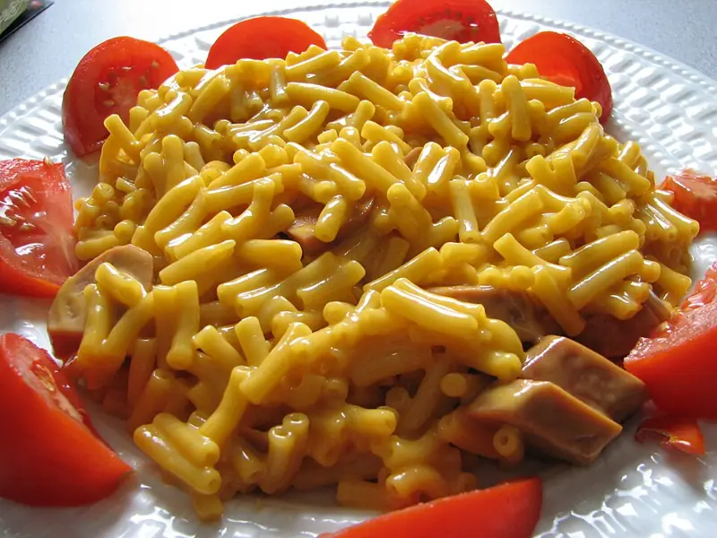

Фото: Matt MacGillivray from Toronto, Ontario, Canada, CC BY 2.0

Макароны с сыром
Макароны в сливочно-сырном соусе за 15 минут
20 мин4 порц.453 ккал на порциюБ 18 · Ж 18 · У 54Интернациональная кухня
Продукты на 4 порц.
- Макароны300 г
- Вода3 л
- Сыр твёрдый150 г
- Сливочное масло30 г
- Молоко0,5 стак.
- Соль1 ст. л.
- Перец чёрный молотый по желанию1 щеп.
Как готовить
- Доведите воду до кипения на сильном огне, посолите.
- Всыпьте макароны, помешайте и варите на среднем огне по времени на упаковке, обычно 8-10 минут.
- Сыр натрите на мелкой тёрке.
- Откиньте макароны на дуршлаг и верните в кастрюлю.
- На слабом огне добавьте масло и молоко, перемешайте.
- Всыпьте сыр и мешайте 1-2 минуты, пока он не расплавится и не обволочёт макароны. Поперчите.
Совет. Соль в воде для макарон - это не вся соль блюда, большая часть уходит с водой. Сыр добавляйте на слабом огне, на сильном он станет тягучими комками.